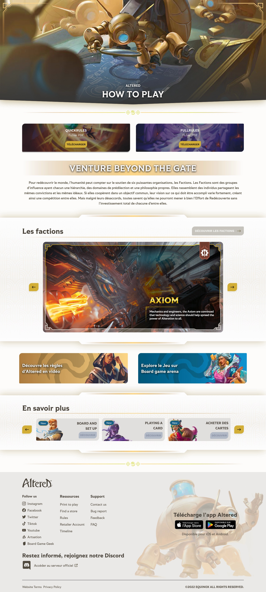
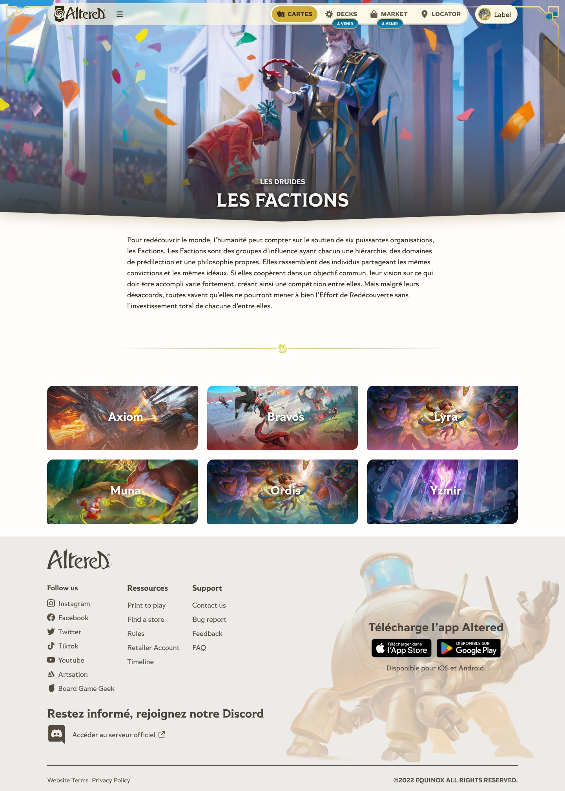
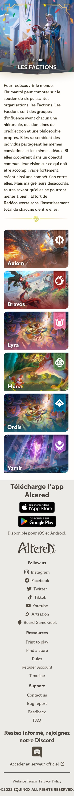

- Une feuille de route en trois temps, adoptée au-delà du produit, jusqu'au marketing.
- Un portefeuille unique pour deux flux d'argent, cadré avec un cabinet d'avocats.
- Une documentation produit devenue une étape de chaque livraison.
Contexte
Altered est un jeu de cartes à collectionner pensé comme un écosystème phygital : chaque carte physique a son double numérique. Après une campagne Kickstarter record, 14 997 contributeurs pour 6,2 M€, l'équipe devait livrer vite, sous les yeux d'une communauté internationale très exigeante.

Décision 1
Livrer en trois temps plutôt que tout à la fois
Le produit couvrait le lore, le jeu, les tournois et un marché entre joueurs. Tout lancer d'un coup aurait dispersé l'équipe et perdu les joueurs. J'ai soutenu et contribué à construire un déploiement en trois temps, où chaque étape prépare la suivante.
S'approprier l'univers
Compte joueur, collection digitale, scan des cartes physiques, lore et factions.
Indicateur : cartes scannéesJouer et se retrouver
Outils de jeu, tournois organisés par les boutiques, fonctions sociales.
Indicateur : tournois organisésÉchanger en confiance
Portefeuille, ventes entre joueurs, paiement sécurisé et conforme.
Indicateur : transactions et pays actifs

Le marketing a repris ce découpage pour piloter sa relation avec la communauté : chaque livraison avait un récit, et les joueurs des jalons clairs.
Décision 2
Un paiement simple, malgré un flou juridique
Deux flux d'argent cohabitaient : les ventes entre joueurs et nos services payants. Et une question bloquait tout : une carte phygitale est-elle un bien physique ou numérique ? La réponse fixait notre fiscalité et nos obligations dans chaque pays.
- Ce que j'ai fait
- Entretiens joueurs, ateliers avec la direction, benchmark. J'ai trouvé un cabinet d'avocats spécialisé et travaillé avec notre prestataire de paiement pour relier le droit, la technique et les parcours.
- L'arbitrage
- Un portefeuille unique plutôt qu'un paiement direct : il sert aux services payants comme aux ventes entre joueurs, quelle que soit la devise.
- Le résultat
- Un lancement simultané dans plusieurs pays, avec des parcours assez souples pour en ajouter d'autres sans refonte.
Le design m'a servi d'outil de décision : des livrables clairs et des ateliers pour que la direction tranche en connaissant les conséquences produit, légales et économiques.
Décision 3
La documentation comme outil d'alignement
J'ai créé et tenu un wiki produit qui centralisait les décisions, les itérations et les arbitrages.
Chaque évolution de fonctionnalité passait par sa mise à jour : c'est devenu une étape de la livraison, et la référence commune du produit, du design et de la tech.
Résultats
Un premier championnat du monde en juin 2025, et une sixième extension en financement participatif.